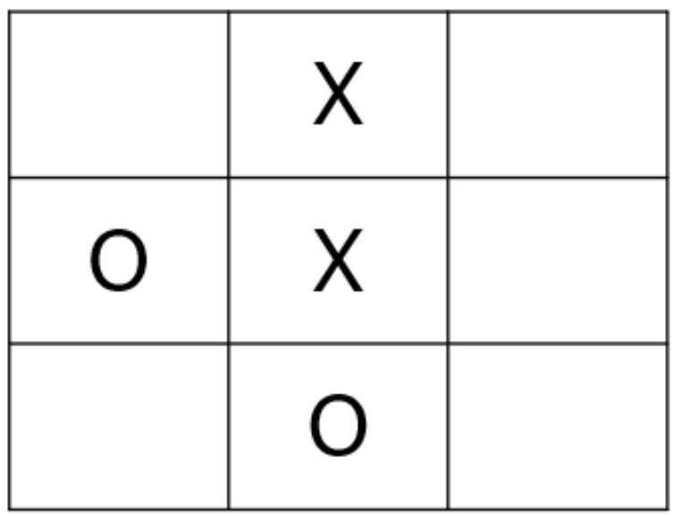

\[ \begin{align}\begin{aligned}\newcommand\blank{~\underline{\hspace{1.2cm}}~}\\% Bold symbols (vectors)
\newcommand\bs[1]{\mathbf{#1}}\\% Differential
\newcommand\dd[2][]{\mathrm{d}^{#1}{#2}} % use as \dd, \dd{x}, or \dd[2]{x}\\% Poor man's siunitx
\newcommand\unit[1]{\mathrm{#1}}
\newcommand\num[1]{#1}
\newcommand\qty[2]{#1~\unit{#2}}\\\newcommand\per{/}
\newcommand\squared{{}^2}
\newcommand\cubed{{}^3}
%
% Scale
\newcommand\milli{\unit{m}}
\newcommand\centi{\unit{c}}
\newcommand\kilo{\unit{k}}
\newcommand\mega{\unit{M}}
%
% Percent
\newcommand\percent{\unit{{\kern-4mu}\%}}
%
% Angle
\newcommand\radian{\unit{rad}}
\newcommand\degree{\unit{{\kern-4mu}^\circ}}
%
% Time
\newcommand\second{\unit{s}}
\newcommand\s{\second}
\newcommand\minute{\unit{min}}
\newcommand\hour{\unit{h}}
%
% Distance
\newcommand\meter{\unit{m}}
\newcommand\m{\meter}
\newcommand\inch{\unit{in}}
\newcommand\foot{\unit{ft}}
%
% Force
\newcommand\newton{\unit{N}}
\newcommand\kip{\unit{kip}} % kilopound in "freedom" units - edit made by Sri
%
% Mass
\newcommand\gram{\unit{g}}
\newcommand\g{\gram}
\newcommand\kilogram{\unit{kg}}
\newcommand\kg{\kilogram}
\newcommand\grain{\unit{grain}}
\newcommand\ounce{\unit{oz}}
%
% Temperature
\newcommand\kelvin{\unit{K}}
\newcommand\K{\kelvin}
\newcommand\celsius{\unit{{}^\circ C}}
\newcommand\C{\celsius}
\newcommand\fahrenheit{\unit{{}^\circ F}}
\newcommand\F{\fahrenheit}
%
% Area
\newcommand\sqft{\unit{sq\,\foot}} % square foot
%
% Volume
\newcommand\liter{\unit{L}}
\newcommand\gallon{\unit{gal}}
%
% Frequency
\newcommand\hertz{\unit{Hz}}
\newcommand\rpm{\unit{rpm}}
%
% Voltage
\newcommand\volt{\unit{V}}
\newcommand\V{\volt}
\newcommand\millivolt{\milli\volt}
\newcommand\mV{\milli\volt}
\newcommand\kilovolt{\kilo\volt}
\newcommand\kV{\kilo\volt}
%
% Current
\newcommand\ampere{\unit{A}}
\newcommand\A{\ampere}
\newcommand\milliampereA{\milli\ampere}
\newcommand\mA{\milli\ampere}
\newcommand\kiloampereA{\kilo\ampere}
\newcommand\kA{\kilo\ampere}
%
% Resistance
\newcommand\ohm{\Omega}
\newcommand\milliohm{\milli\ohm}
\newcommand\kiloohm{\kilo\ohm} % correct SI spelling
\newcommand\kilohm{\kilo\ohm} % "American" spelling used in siunitx
\newcommand\megaohm{\mega\ohm} % correct SI spelling
\newcommand\megohm{\mega\ohm} % "American" spelling used in siunitx
%
% Capacitance
\newcommand\farad{\unit{F}}
\newcommand\F{\farad}
\newcommand\microfarad{\micro\farad}
\newcommand\muF{\micro\farad}
%
% Inductance
\newcommand\henry{\unit{H}}
\newcommand\H{\henry}
\newcommand\millihenry{\milli\henry}
\newcommand\mH{\milli\henry}
%
% Power
\newcommand\watt{\unit{W}}
\newcommand\W{\watt}
\newcommand\milliwatt{\milli\watt}
\newcommand\mW{\milli\watt}
\newcommand\kilowatt{\kilo\watt}
\newcommand\kW{\kilo\watt}
%
% Energy
\newcommand\joule{\unit{J}}
\newcommand\J{\joule}
%
% Composite units
%
% Torque
\newcommand\ozin{\unit{\ounce}\,\unit{in}}
\newcommand\newtonmeter{\unit{\newton\,\meter}}
%
% Pressure
\newcommand\psf{\unit{psf}} % pounds per square foot
\newcommand\pcf{\unit{pcf}} % pounds per cubic foot
\newcommand\pascal{\unit{Pa}}
\newcommand\Pa{\pascal}
\newcommand\ksi{\unit{ksi}} % kilopound per square inch
\newcommand\bar{\unit{bar}}
\end{aligned}\end{align} \]
Sep 09, 2026 | 389 words | 4 min
read
7.3.1. Software Logic - Decision Trees
Design Challenge

Fig. 7.1 A 3 by 3 Tic-Tac-Toe board showing a game in progress.
You are tasked with designing an interactive exhibit for a children’s museum that teaches visitors how artificial intelligence works. As part of this exhibit, the museum wants an interactive touch screen where visitors can play Tic-Tac-Toe against an AI algorithm that never loses.
Task 1: Draft Psuedocode
The first step in programming any AI algorithm is to break the complex problem down into
smaller, manageable pieces.
Instructions
Work with your team to break the Tic-Tac-Toe decision process down into logical,
sequential steps.
Draft a flowchart containing pseudocode that maps out these steps.
Ensure your flowchart clearly outlines the exact logic the AI algorithm will use to
evaluate the board and always select the best possible move.
Task 2: Complete a Decision Tree
To develop this game, you must program the AI to use decision trees. The algorithm will
calculate the probability of winning for each possible next move and select the path
with the highest probability of success. In this specific scenario, the AI is playing as
“X” and must make the next move.
Instructions
Open the Decision Tree Template Excel File
Calculate the probability of “X” winning for each of the five available squares.
Recommend the best next move for the AI to make based on these probabilities.
Task 3: Algorithm Optimization
Engineers change the behavior of an AI algorithm by manipulating the weights of
different parameters. For example, if an algorithm’s goal is strictly to win, it might
make riskier moves than an algorithm programmed to simply avoid losing.
You can optimize your algorithm to balance these goals using the following formula:
(7.1) \[\text{Optimization Score} = \frac{\sum_{i=1}^{k} w_i n_i}{\sum_{i=1}^{k} n_i} = \frac{w_{win}n_{win} + w_{tie}n_{tie} + w_{loss}n_{loss}}{n_{win} + n_{tie} + n_{loss}}\]
Instructions
Create an algoirthm that minimizes the chance of losing and maximizes the chance of winning by applying the following weights:
\(w_{win} = 1\)
\(w_{tie} = 0\)
\(w_{loss} = -1\)
Calculate the optimum move score for the available squares.
Determine if this new optimization changes your original recommended move.
Deliverables
Complete your own analysis and submit your own responses for the report.
Design Challenge Individual Report: Download the Report
Your name and section number.
Task 1: Your pseudocode flowchart image.
Tasks 2 and 3: Your reflection on the decision tree algorithm optimization.
Decision Tree Excel File: Your completed 7.3.1_Decision_Tree_Template.xlsx
(Note: You will complete Tasks 4-6 and the Neural Network Excel file on Day 2. Submit your files at the end of the module).